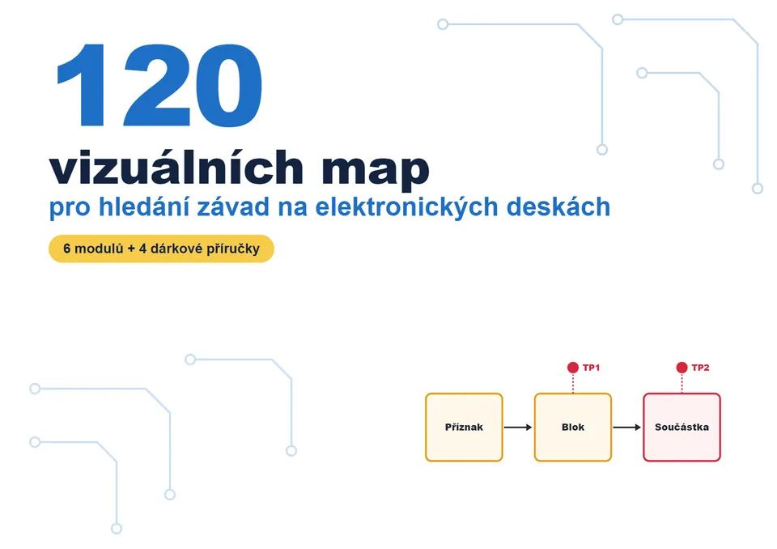
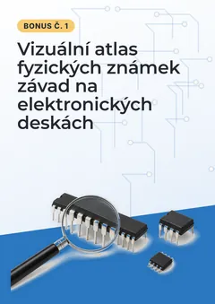
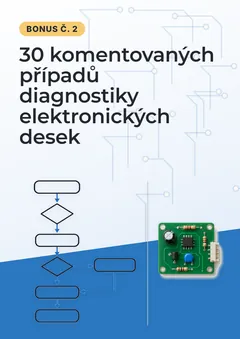
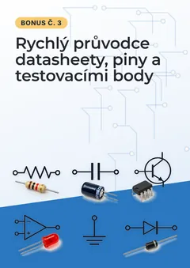
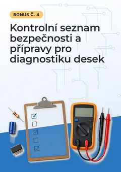

120 vizuálních map pro hledání závad na elektronických deskách
Každá mapa je jeden příznak na jedné stránce. Otevřete ji u stolu, rozdělte desku na bloky, měřte v označených bodech a porovnejte s tabulkou.
⬇ Stáhnout PDF Otevřít v prohlížeči →Vaše 4 bonusy

Vizuální atlas fyzických známek závad na elektronických deskách
Mnoho závad je vidět ještě před měřením. Tento atlas shrnuje 19 fyzických příznaků: jak je poznat, kterou součástku obvykle prozradí a co změřit pro potvrzení.

30 komentovaných případů diagnostiky elektronických desek
Každá stránka je celá deska se skutečnou dílenskou závadou: co dělala, co se prohlíželo, co se měřilo a kde byla vada. Jdou od jednoduchých po obtížné.

Rychlý průvodce datasheety, piny a testovacími body
Tento průvodce není na čtení schématu: slouží k tomu, abyste věděli, jaké napětí čekat na každém pinu a kam na skutečné desce přiložit hroty.

Kontrolní seznam bezpečnosti a přípravy pro diagnostiku desek
Než otevřete desku a před každým zapnutím, projděte si příslušnou stránku. Tak neztratíte původní závadu ani nepřidáte novou.
Kde začít
- Stáhněte si všech 5 PDF a uložte je do telefonu nebo počítače.
- Pokud jste nikdy desku nediagnostikovali, přečtěte si celý modul 1: je v něm metoda, kterou používají všechny ostatní mapy.
- Pokud už víte, co přístroj dělá, najděte příznak v obsahu: nezapne se (modul 2), spínaný zdroj (modul 3), zapne se, ale nefunguje (modul 4), výstup, který nereaguje (modul 5), nebo závada, která přichází a odchází (modul 6).
Uložte si tento odkaz
Tato stránka je váš přístup k materiálu kdykoli.
Další krok
Metodu už máte. Dalším krokem je ji použít: vyberte desku, kterou máte odloženou, začněte mapou 1 a sledujte cestu příznaku bez přeskakování kroků.